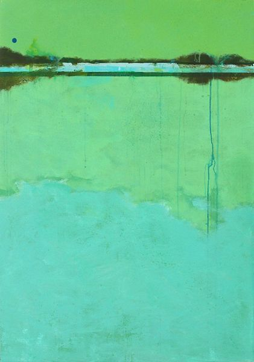

tip of the iceberg I had believed self-awareness to be sufficient from looking inwards and reflecting on the inner workings of your mind and yet I’ve grown to realize this is merely the tip of the iceberg. Understanding your mind gives a surface level understanding of how
boundaries It seems more so the feeling that’s been consuming me most of all the different emotions I’ve been feeling in recent memory is that of overwhelm. To some degree, I feel I’ve lost my sense of self, my sense of understanding
Happy equals It's one thing to feel the fulfillment of truly looking after a loved one. It's something else altogether to feel fulfilled by someone who truly looks after you. No matter
quiet I'm glad I made the decision to get far away from the city to gain some clarity, away from all the issues and unease that has been haunting me for
 happiness A Zen master was given a beautifully crafted crystal cup. It was a gift from a former student. He was very grateful. Every day, he enjoyed drinking out of his
self-control I apologize if I can't give you any more time than I can. I made the mistake of doing it for someone in the past and I lost myself in
Sad finding myself "I feel that a formulation which puts the self into the centre of the personality as the initiator of all actions and as the recipient of all impressions exacts too high a price... If we instead put our trust in empirical observation .. we will
Sad a post-mortem “We think about one-way doors, and two-way doors. A one-way door is a place with a decision if you walk through, and if you don’t like what you see
Sad emotion resistance training "Eventually, the thrill of winning the lottery will itself wear off. If all things are judged by the extent to which they depart from a baseline of past experience, gradually
do understand Everything here represents brief periods of lowest lows and highest highs. A means for myself to remember emotionally-intense times. Source
no time I wish to find someone who can relate to the fact that I feel like time is slipping away from my hands. There's so much I want to do. So
Sad grief No doubt, it is a horrible feeling, grief. It is unlike a sharp but fleeting bee sting, but a sort of dull ache, one that lingers on and on incessantly.
intimacy Sometimes I wish I could read your mind. I have some thoughts, I have some questions. But I can't ask any questions I can't reveal my own answers to. I'll
throwing up Gut wrenching. There's a great disparity between being childish and being naive. Everyone has their own tragic flaw. As we face challenges we may inadvertently but gradually lose some of
Happy hey I haven't been here in a while. We write more when times are tough and are otherwise too busy caught up in our own carefree adventures. I've been blinded, fallen
precaution It's important to keep in mind the words I write only reflect my state of mind during an isolated period of time; they hold valid for their corresponding time period
limerence "There are two tragedies in life. One is to lose your heart's desire. The other is to gain it." How bittersweet limerence can be; it's such a heavy
minimalism It's not the daily increase but daily decrease. Hack away at the unessential. - Bruce Lee The older I grow up the more I find unnecessary clutter to confound me.
doctrine 'You have your way. I have my way. As for the right way, the correct way, and the only way, it does not exist.' - Friedrich Nietzche I've grown to theorize that all it takes to pass my subjective threshold of self-awareness is
waldeinsamkeit When I was younger I used to chase new experiences. Yet maybe it is in the nature of the self-proclaimed old soul, to realize how repetitive it can be, to witness how the sunsets in two different trips and countries can seem dissimilar only
entangled inextricably like intertwined earphone wires jumbling only further into disorder the nature of the heart does not permit unraveling for it loses its confounding complexion no matter how much logic desires it so to roam free from that which is simultaneously safe soft and
gift Time is boundless in its nature and yet becomes incredibly precious when bestowed upon man in such minuscule quantity. To devote parts of it to others, to carve it out willingly understanding its unforgiving and absolute nature, means much more than any present that
complacency Why stop at 5, 10 minutes? If you don't will yourself to power through a mere 20-minute run, how else are you going to tackle the more difficult challenges of life? The activity couldn't be more irrelevant; it's the mindset. I don't want to
disoriented I woke up from my occasional nap yesterday and completely lost my sense of purpose. The norm may be to attribute it to a biological reaction to the disorientation from the body's typical circadian rhythm but I think there's more to it. I think
digital detox We're drowning in information while starving for wisdom." - E.O. Wilson The concept of boredom must be so foreign to kids nowadays exposed to information overload on the daily. Regardless of time scale, there's always been much going on in our environments